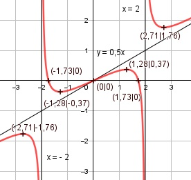

Aufgabe 120 0,5x3 - 1,5x f(x) = -------------- x2 - 4 Quotientenregel erste Ableitung: u = 0,5x3 - 1,5x, u' = 1,5x2 - 1,5 v = x2 - 4, v'= 2x (1,5x2-1,5)*(x2-4) - 2x*(0,5x3-1,5x) f'(x) = -------------------------------------- (x2 - 4)2 1,5x4 - 7,5x2 + 6 - x4 + 3x2 f'(x) = ------------------------------ (x2 - 4)2 0,5x4 - 4,5x2 + 6 f'(x) = ------------------- (x2 - 4)2 Quotientenregel zweite Ableitung: u = 0,5x4 - 4,5x2 + 6, u' = 2x3 - 9x v = (x2 - 4)2 Kettenregel: v' = 2 * 2x * (x2 - 4) = 4x * (x2 - 4) (2x3 - 9x) * (x2 - 4)2 f''(x) = ------------------------ - (x2 - 4)4 4x * (x2 - 4) * (0,5x4 - 4,5x2 + 6) - ------------------------------------- (x2 - 4)4 (x2 - 4) * [(2x3 - 9x)(x2 - 4) f''(x) = ------------------------------- - (x2 - 4)4 4x * (0,5x4 - 4,5x2 + 6)] - --------------------------- (x2 - 4)4 2x5- 17x3 + 36x - 2x5 + 18x3 - 24x f''(x) = ----------------------------------- (x2 - 4)3 x3 + 12x f''(x) = ---------- (x2 - 4)3 Zur Beurteilung, ob f'''(x) ≠ 0 : (Begründung siehe Aufgabe 105) u = x3 + 12x, u' = 3x2 + 12 u' 3x2 + 12 f'''(x) = --- = ---------- ≠ 0 für alle x ≠ 2,-2 v (x2 - 4)3 Polstellen, Nenner = 0: x2 - 4 = 0 |+4 x2 = 4| ⱱ x1,2 = ± 2 Nenner = 0 und Zähler = 0,5 * ±23 - 1,5 * ±2 ≠ 0 --> senkrechte Asymptote bei x = 2 und x = -2 Definitionsbereich: -∞ < x < ∞, x ≠ 2, -2 Zählergrad größer als Nennergrad --> Näherungskurve 0,5x f(x) = 0,5x3 - 1,5 x : x2 - 4 = 0,5x + -------- -(0,5x3 - 2x) x2 - 4 --------------- 0,5x 0,5x 0,5x + -------- geht gegen 0,5x für x --> ± ∞ x2 - 4 Wertebereich: -∞ < f(x) < ∞ Symmetrie zur y-Achse bzw. zum Punkt (0|0): 0,5 * (-x)3 - 1,5 * (-x)3 f(-x) = --------------------------- ((-x)2 - 4) -0,5x3 + 1,5x f(-x) = ----------------- ≠ f(x) (x2 - 4) --> keine Achsensymmetrie -(-0,5x3 + 1,5x) 0,5x3-1,5x -f(-x) = ------------------ = ------------ = f(x) (x2 - 4) (x2 - 4) --> Punktsymmetrie Nullstellen: f(x) = 0 0,5x3 - 1,5x ------------- = 0 |*(x2 - 4) (x2 - 4) 0,5x3 - 1,5x = 0 0,5x * (x2 - 3) = 0 x1 = 0 x2 - 3 = 0 |+3 x2 = 3 |ⱱ x2,3 = ± 1,73 N1(0|0), N2(1,73|0), N3(-1,73|0) Schnittpunkt mit der y-Achse: x = 0 0,5 * 03 - 1,5 * 0 f(0) = -------------------- = 0 02 - 4 Sy(0|0) Extrempunkte: f'(x) = 0 0,5x4 - 4,5x2 + 6 ------------------- = 0 |*(x2 - 4)2 (x2 - 4)2 0,5x4 - 4,5x2 + 6 = 0 |:0,5 x4 - 9x2 + 12 = 0 Substitution: x2 = z z2 - 9z + 12 = 0 p, q - Formel p = -9, q = 12 z1,2 = z1,2 = 4,5 ± z1,2 = 4,5 ± z1,2 = 4,5 ± 2,87 z1 = 7,37 z2 = 1,63 Rücksubstituiert: x2 = 7,37 |ⱱ x1,2 = ± 2,71 0,5 * 2,713 - 1,5 * 2,71 f(2,71) = -------------------------- = 1,76 2,712 - 4 f(-2,71) = -1,76 wegen Punktsymmetrie x2 = 1,63 |ⱱ x3,4 = ± 1,28 0,5 * 1,283 - 1,5 * 1,28 f(1,28) = --------------------------- = 0,37 1,282 - 4 f(-1,28) = - 0,37 wegen Punktsymmetrie 2,713 + 12 * 2,71 f''(2,71) = ---------------------- > 0 (2,712 - 4)3 --> Tiefpunkt (2,71|1,76) (-2,71)3 + 12 * (-2,71) f''(-2,71) = ---------------------------- < 0 (2,712 - 4)3 --> Hochpunkt (-2,71|-1,76) 1,283 + 12 * 1,28 f''(1,28) = ---------------------- < 0 (1,282 - 4)3 --> Hochpunkt (1,28|0,37) (-1,28)3 + 12 * (-1,28) f''(-1,28) = ---------------------------- > 0 ((-1,28)2 - 4)3 --> Tiefpunkt (-1,28|-0,37) Wendepunkte: f''(x) = 0 x3 + 12x ----------- = 0 |*(x2 - 4)3 (x2 - 4)3 x3 + 12x = 0 x(x2 + 12) = 0 x1 = 0; f(0) = 0, f'''(0) ≠ 0 --> WP(0|0) x2 + 12 = 0|-12 x2 = -12 |ⱱ --> kein weiterer Wendepunkt Graph:
